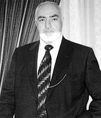
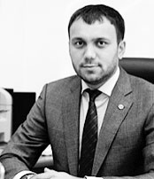
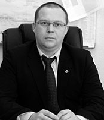
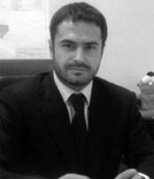
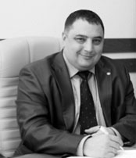
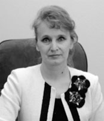

Контакты

Гончаров Владимир Владимирович
Председатель совета директоров

Харисов Марк Гаврилович
Генеральный директор

Скоробагатов Серафим Власович
Заместитель генерального директора по финансово - экономической деятельности

Гончаров Афанасий Васильевич
Заместитель генерального директора по маркетингу и развитию бизнеса

Кашкаров Альберт Савельевич
Заместитель генерального директора по строительству

Гордеева Ефима Юпитеровна
Главный бухгалтер